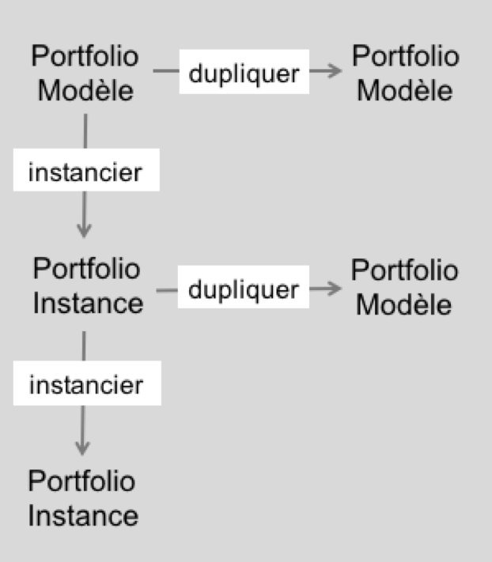
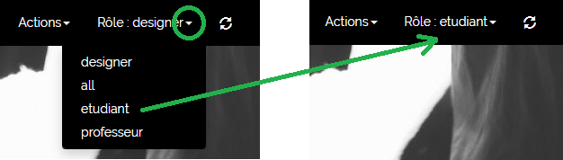

Dans Karuta un portfolio est représenté par un arbre structuré. Tous les portfolios sont construits selon une arborescence de type XML (voir la page STRUCTURES pour plus de détails).
Il y a plusieurs types d'arbres dans Karuta :
Un modèle de portfolio est une structure d'arbre qui organise des ressources. Les ressources sont les éléments qui vont contenir les données : les données fournies aux utilisateurs (comme des instructions ou des fichiers à consulter), ainsi que les données que les utilisateurs vont entrer pour peupler leur portfolio. Karuta offre des ressources de plusieurs types : champ de texte, éditeur de texte, fichier, image, audio, vidéo, calendrier, etc (voir la page RESSOURCES pour plus de détails).
Une fois construit par le designer, le modèle de portfolio est instancié pour chaque utilisateur, c'est à dire que l'on fait une copie du modèle et le nouvel arbre devient le portfolio spécifique à un utilisateur.
Une instance de portfolio est une copie du modèle pour un utilisateur spécifique. Au moment de l'instantiation (copie) les rôles et les droits sont créés pour chacun des éléments du portfolio, en fonction de ce que le designer a indiqué dans les métadonnées (voir la page MÉTADONNÉES pour plus de détails).
Un portfolio référentiel contient des listes d'éléments qui seront référencés dans les autres portfolios, par exemple un référentiel de compétences ou encore les choix d'une liste déroulante.
Le portfolio de composantes réutilisables sert à stocker des morceaux de portfolio qui seront ensuite mis à la disposition de l'utilisateur via un menu. L'utilisateur peut ainsi ajouter des morceaux à son portfolio selon ses besoins.
Un rapport est un script contenant des commandes spécifiques qui permettent de sélectionner des informations d'un ou de plusieurs portfolios et de les afficher sous une présentation différente. Par exemple pour faire un tableau de bord, un CV ou un rapport de cohorte. Les commandes de script de rapport permettent de naviguer dans les portfolios pour y sélectionner les éléments à afficher. Le résultat est affiché dans une table HTML dont la mise en forme est libre au designer (voir la page Rapport pour plus de détails).
Un batch est un script contenant des commandes qui permettent d'une manière automatique de créer des utilisateurs, des instances de portfolio, de mettre à jour des éléments de ces portfolios, etc. Un script de batch est généralement associé à un fichier CSV contenant, par exemple, la liste des utilisateurs. L'exécution du script de batch créera alors automatiquement tous les portfolios des utilisateurs (voir la page Batch pour plus de détails). Un script de batch peut également être associé à un formulaire batch.
Un formulaire batch permet d'exécuter un script de batch d'une manière unitaire, pour un seul utilisateur à la fois, sans passer par un fichier CSV.
Un portfolio ou arbre Karuta est construit en y ajoutant des branches un peu comme dans un jeu de Lego. Certaines branches sont prédéfinies : les éléments de base de Karuta. D'autres branches sont construites par le designer en assemblant des éléments de base. On peut ainsi construire des portfolios complexes.
On peut aussi définir des menus permettant à l'utilisateur final d'ajouter lui-même des branches pré-construites par le designer à son portfolio.
On distingue deux types de portfolios :
Le diagramme ci-dessous présente les liens entre les deux types de portfolios :
Dans un portfolio modèle, le designer peut simuler les différents rôles pour vérifier les droits attribués sur chaque élément.
